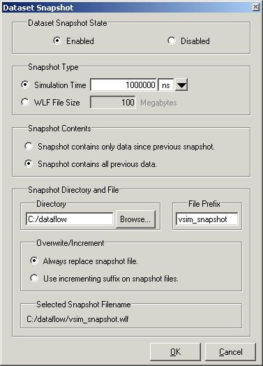

Dataset Snapshot
lets you periodically copy data from the current simulation WLF
file to another file. This is useful for taking periodic “snapshots”
of your simulation or for clearing the current simulation WLF file
based on size or elapsed time.
Procedure
- Log objects of interest with
the log command.
- Select the Wave window to
make it active.
- Select to
open the Dataset Snapshot dialog box (Figure 1).
- Select Enabled for
the Dataset Snapshot State.
- Set the simulation time or
the wlf file size.
- Choose whether the snapshot
will contain only data since previous snapshot or all previous data.
- Designate the snapshot directory
and file.
- Choose whether to replace
the existing snapshot file or use an incrementing suffix if a file
by the same name exists.
- Click the OK button to create
the dataset snapshot.
Figure 1. Dataset Snapshot Dialog Box
You can customize the datasets either
to contain all previous data, or only the data since the previous
snapshot. You can also set the dataset to overwrite previous snapshot
files, or increment the names of the files with a suffix.